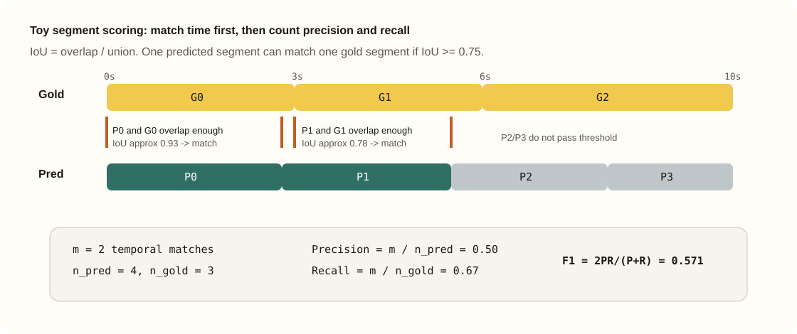
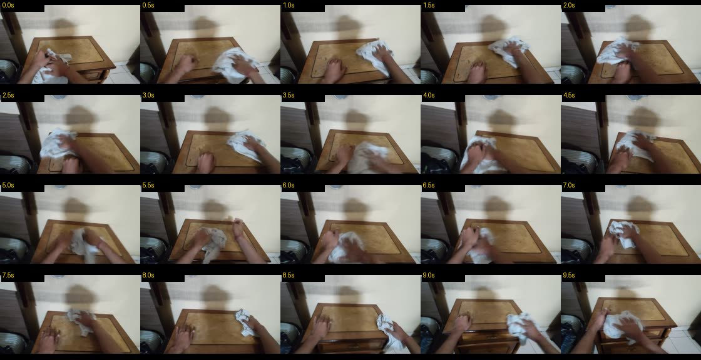
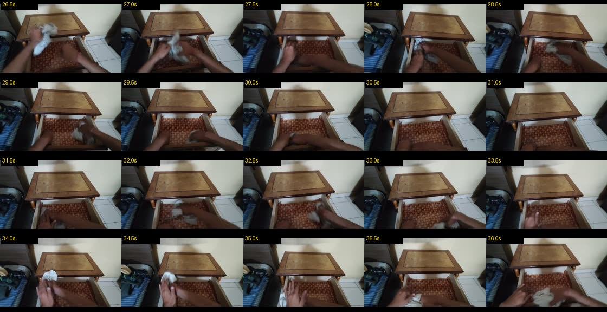
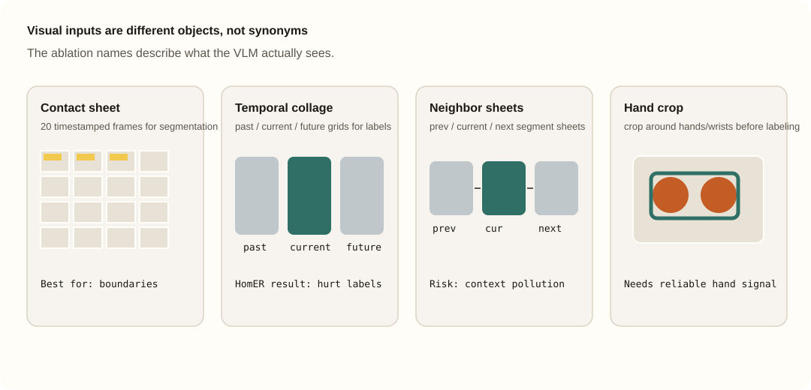
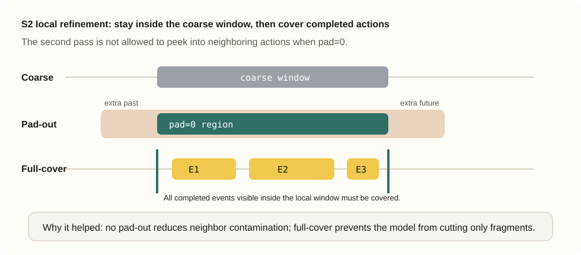
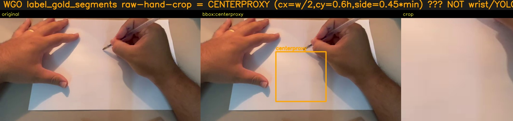
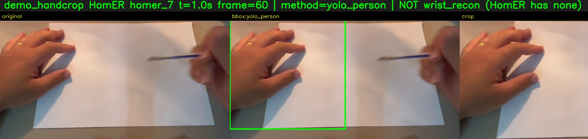

00
输入视频
Loading…
下方为整集预览。到 Step 06 点选时间轴或表格行，可只播该段并同步看标注。
无法加载数据文件。请在本报告目录启动静态服务器后打开（例如
python3 serve_report.py --port 8765；需支持 HTTP Range 才能跳播视频片段），不要直接用受限的 file://。
第一视角（egocentric）人类视频指由佩戴在头部的相机记录的、以第一人称视角拍下的人类日常操作过程：一个人在真实厨房里切菜、在工位上装配零件、在超市里整理货架。相机跟着头动，双手在画面中央干活，物体、光照、失败与重试都来自真实环境而不是实验室布景。近两年 EgoVerse8、EgoDex7、EgoLive9 等公开数据集把这类视频推到了千小时以上的规模。
对机器人学习和具身基础模型来说，这类数据的价值主要有三点。其一是分布外性能：真实人类视频覆盖的场景、物体和技能远比遥操作采集的机器人数据多样，用它做预训练可以直接改善策略在没见过的环境里的表现。其二是可迁移的操作结构：人手和机器人末端之间存在共享的「看到什么 → 该做什么」先验，人类视频可以先撑起视觉-语言-动作模型的预训练语料，再用少量真机数据对齐动作空间。其三是采集成本：拍这类数据不需要机器人本体、不需要遥操作员，一个头戴相机就能在真实环境里并行地、长时间地产出数据。
但原始视频本身不是训练数据。一段十几分钟的第一视角视频通常连续包含几十个动作，既没有时间边界，也没有语言标签。要把它变成结构化的监督信号，必须回答两个问题：每个动作在什么时候开始和结束，以及这一段在做什么。这两个问题合起来就是本文的任务——子任务分段与语义标注。
这件事并不容易：画面随头部晃动，手经常挡住被操作的物体，动作之间没有明显的停顿，细粒度操作一个接一个。而得到的动作边界与语义描述，正是 VLA 预训练、层级技能学习和奖励模型构建所需要的监督形式。人工逐小时标注显然覆盖不了千小时量级的语料，因此我们需要一条可审计、可复现、成本可控的自动标注管线。
要比较不同的标注方案，需要一个公开、可复现、并且和我们的任务同构的基准——它必须同时考核「切得对不对」和「写得对不对」。本文用的是 WGO-Bench1。
WGO-Bench（What's Going On Benchmark）由 Macrodata 随其公开博客一同发布2，把「长视频 → 动作级片段 + 一句话描述」定义成一个可以打分的公开任务。它包含约 100 个 episode，每个 episode 提供人工标注的子任务时间边界，以及每段对应的一句短描述。 其中 HomER 是它的第一视角人类操作子集：画面随头动晃、手常挡住物体、动作连续且细，通常比第三人称桌面视频更难。 本报告的所有分数固定在 HomER 的 25 个视频 / 470 个参考片段上。
完整公式与直觉见 附录 A。正文只记定义与玩具例。
简化示例（与 scorer 逻辑一致）：

Gold：G0[0,3], G1[3,6], G2[6,10] · Pred：P0[0.5,2.8], P1[2.8,5.5], P2[5.5,8], P3[8,9.5]
在我们之前，已经有几条把长视频变成子任务标注的公开路线。它们各自解决了问题的一部分，也各自留下了缺口——这些缺口决定了我们要往哪里试。
VITRA5 把单目第一视角视频处理成三维手部与相机运动、原子动作片段和语言指令，它的切段依据是手部运动信号——取腕部速度的局部极小值当作动作边界。另一类更简单的做法直接按固定时长切。我们把这两类统称为 rule-based 分段。 它们共同的问题是过分割：一个动作内部的停顿、重新抓握、手腕微调都会产生速度低谷，于是「把胡萝卜放进碗里」被切成五六段。我们自己的生产管线正走这条路线（HaWoR 腕速 + minima 切段 + merge），在 HomER 上它预测出 810 段而参考只有 470 段，Segment F1 只有 0.0953。
Macrodata · Annotating Robot Video Subtasks2 是目前最系统的公开工作：它把「长视频 → 动作级片段 + 短语义描述」定义成可打分的公开问题，发布了 WGO-Bench 与三类分数，给出了 contact sheet 一类的视觉输入设计和用 GEPA 搜索得到的分段 prompt，并在多个闭源与开源模型上做了对照。 有两处留白与我们直接相关：其一，它报告了在强模型（Gemini）上各种 trick 的收益，但没有回答预算有限、只能用开源模型时该加哪些 trick——而这恰恰是我们要标几千小时视频时的真实约束；其二，它的标注实验建立在人工切好的边界之上，而分段本身同样重要，后面会看到它其实是端到端分数的瓶颈。
Scale Labs 的 The Path to Large Scale Dense Video Captioning4 讨论的是在已经切分好的 clip 上写稠密描述，以及拼贴、时间戳、稳定抽帧这些具体工程做法。它对我们的视觉输入设计有直接启发，但同样跳过了「从原始长视频里预测边界」这一步。
EgoANT 是我们针对这些缺口做的一套面向第一视角人类操作视频的自动标注管线：把长视频划分为动作级片段，并为每个片段生成简洁的操作描述。在 HomER 的 25 个视频 / 470 个参考片段上，最佳分段配置取得 Segment F1 0.2031；固定参考边界下的纯标注 Label Acc 达 55.7%；只以视频为输入的端到端方案取得 Semantic E2E F1 0.1542。据此形成了一套相对廉价、完全基于开源视觉语言模型的第一视角子任务自动标注系统。
EgoANT 是我们的 egocentric 人手视频自动标注系统。它有两条需要分清的路径：
模型栈以 Qwen 为主：分段用 Qwen3.6-27B（快、便宜、可复现）， 标注 / judge / selector 用 Qwen3.5-397B（句子质量与选优）。 相对 Gemini 参考栈，同一套权重与 prompt 可在不同机器上复跑，消融结论可核对。
| 角色 | 模型 | 是否读取 gold 信息 | 在本文中的作用 |
|---|---|---|---|
| Segmenter | Qwen3.6-27B | 否 | 生成预测时间边界 |
| Caption generator | Qwen3.6-27B / Qwen3.5-397B | 否 | 生成候选语义标签 |
| Candidate selector | Qwen3.5-397B | 否 | 从候选标签中选择最终标签 |
| Primary evaluation judge | Gemini-3.5-Flash | 只读取 gold 标签用于离线评分 | 计算 Label Acc 与 Semantic E2E F1 |
completed_events_duration_prior_v1）。我们不把整段 MP4 作为视觉输入直接提交给模型，而是每隔 0.5 秒抽一帧，缩到约 224×144， 每张 sheet 20 格（5×4），格子上画黄色时间戳。 一张 sheet 大约覆盖 10 秒；一集长视频会拆成多张 sheet。



读图：contact sheet 用来找边界；raw 是固定边界标注的最朴素输入；proxy overlay 是在原帧上叠加光流/启发式提示，不是真手部重建； temporal collage 与 neighbor sheet 引入前后文；基于 HaWoR 重建腕轨迹的裁剪依赖估计腕部轨迹。Gemini 重评显示，增加视觉上下文并未提高 HomER 上的固定边界标注准确率。
对齐 Macrodata 博客的 Boundary comparison 交互：上方播视频，下方多轨时间轴；播放头随时间移动，点击色块可跳到该段。
Instruction: …
模型常能叫出粗事件，却漏掉更细的子任务边界。同集 homer_4（与下方样例走读一致）对照：人工 gold、整集粗分、contact sheet 粗分。悬停色块可看完整标注。
下列走读为 selector 路径（宽屏 1080p、擦桌子动作清楚）；生产可在同边界下改用单路 raw。任务：用布擦桌面 / 柜面。折叠内 Prompt 为英文原文。
Loading…
下方为整集预览。到 Step 06 点选时间轴或表格行，可只播该段并同步看标注。
参数与上一节相同。模型后续只看这些带时间戳的拼图，而不是原始 MP4 字节流。
下方为首张 sheet 示例（同参数）。
把该集尽量多的 sheet 一次送给分段模型，并在请求文本里贴上切段规则清单 （GEPA 搜索得到的英文规则：只标完成事件、偏好约 2–10 秒等——见下方折叠全文）。 这样能消灭「分片接缝假切点」，但容易切太少（欠分割）。
Loading…
在粗边界附近开一个短时间窗，用同一版式的 sheet 再切一次。 窗口不外扩：只使用粗边界内部的视觉上下文（技术名 pad=0）； 盖住完整动作：窗内看得见的完成事件都要切到，避免不完整微动作片段（技术名 full-cover）。 （整步技术名：S2 · pad=0 · full-cover）

Loading…
固定分段边界后，对每一段用多条路径各写一句： raw=默认读帧； ffmpeg=换解码抽帧路径； seed=带先验/种子标签的变体； rawprior=带 prior 的 raw。 下表是本集一段真实候选：意见不一致时，selector 才有价值。
| 来源 | 候选标签 |
|---|
Loading…
用 Qwen3.5-397B 从候选里挑一句最像「完成操作」的短指令。
Loading…
Loading…
这里只走 selector 预测轨（点色块或表格行 → 右侧播该段、左侧看标注）。 与 gold / 整集粗分 / contact sheet 的多轨边界对照见上方 §3.5，不再重复画 gold 时间轴。
| # | 时间 (s) | 子任务 | Selector |
|---|
Loading…
两种 WGO 路径共用同一套 S2 分段（Seg F1=0.2031），只改标注调用。API 次数由公开报告产物结构计数；token 为工程估计。Macrodata 报的是 Gemini batch 美元价；本页给出 Qwen 栈的结构化估计，二者不是同模型账单。细节见附录 G。
| 来源 | 口径 | 数字 |
|---|---|---|
| Macrodata 公开 | E2E seeded relabel（batch） | ~$2.64 / 视频小时；segmentation-only batch ~$0.43/h |
| Macrodata 公开 | contact sheet vs 逐帧输入 | 约 12× 更便宜（文中有 token/价格示意） |
| EgoANT（本页 WGO） | raw / selector 工程估计 + 产物 API 次数 | 见下表；非 Gemini 账单 |
| EgoANT 生产管线 | 同一 HomER 子集上的内部工程估计 | 仅保留聚合调用量级；不公开内部机器、路径或服务状态 |
| 项 | 单路 raw（E2E 0.1414） | 候选+selector（E2E 0.1542） |
|---|
按时间线叙述；主表与图跟在后面。实验细节（做法卡、pad 消融）默认折叠。
表头：P（Precision）= match / pred（预测段里配对成功的比例）； R（Recall）= match / gold（gold 段被找回的比例）； match / pred / gold= 配对成功数 / 预测段数 / gold 段数（本子集 gold 恒为 470）。 「模型」列若写规则后处理，表示在已有预测上做脚本合并，不再调用 LLM。
| 条件 | F1 | P / R | match/pred/gold | 模型或方法 | 结果一句话 |
|---|
窗口外扩秒数（旧称 pad）的消融未进入主决策路径；细节见折叠区。
| 条件 | F1 | P / R | match/pred/gold | 模型或方法 | 结果一句话 |
|---|
固定参考边界后，Gemini judge 全量重评显示：raw 27B 最高，为 55.7%； temporal collage 27B 为 52.8%，proxy overlay 27B 为 50.6%，HaWoR-reconstructed wrist-guided crop 397B 为 50.9%，raw 397B 为 50.2%。 397B 上，overlay 48.5%、temporal collage 45.1%、neighbor / proxy hand-collage 约 39–40%。 结论很朴素：在 HomER 这个子集上，复杂视觉输入常常污染当前动作描述；先固定 judge，再讨论输入设计。
| 条件 | Acc | n_match/n | 模型 | Δ vs raw | 备注 |
|---|


分段锁在 0.2031 后，只改标注路径（时间 match 数不变，变的是语义 match）。 27B 自标为 0.1234；27B raw 重标虽然在固定参考边界 Label Acc 上最高，但在预测边界上 E2E 只有 0.1285； 397B raw 重标到 0.1414；ffmpeg raw和397B-prior neighbor都到 0.1491； candidate selector从多路候选中选择最终标签，取得最高观察值 0.1542。
| 条件 | Seg F1 | E2E F1 | pred/gold | 备注 |
|---|
| 阶段 | 推荐 | 当前不推荐 |
|---|---|---|
| 分段 | Qwen3.6-27B + 切段规则清单 + 局部精修（窗口不外扩、盖住完整动作） | 分片 max3；基于规则的相邻片段合并 |
| 标注（省钱） | 固定参考边界诊断：27B raw（Label Acc 55.7%）；预测边界 E2E 低成本配置：397B raw（0.1414） | proxy overlay / 邻段 / 整帧 collage / proxy hand-crop 默认启用 |
| 高准确率配置 | 同上边界 + 多候选 + 397B selector（Gemini E2E 0.1542） | 分段小模型自标当终稿 |
| 对照 | HomER-only vs Macrodata HomER≈0.227 | 用全量 0.306 headline 直接对比 |